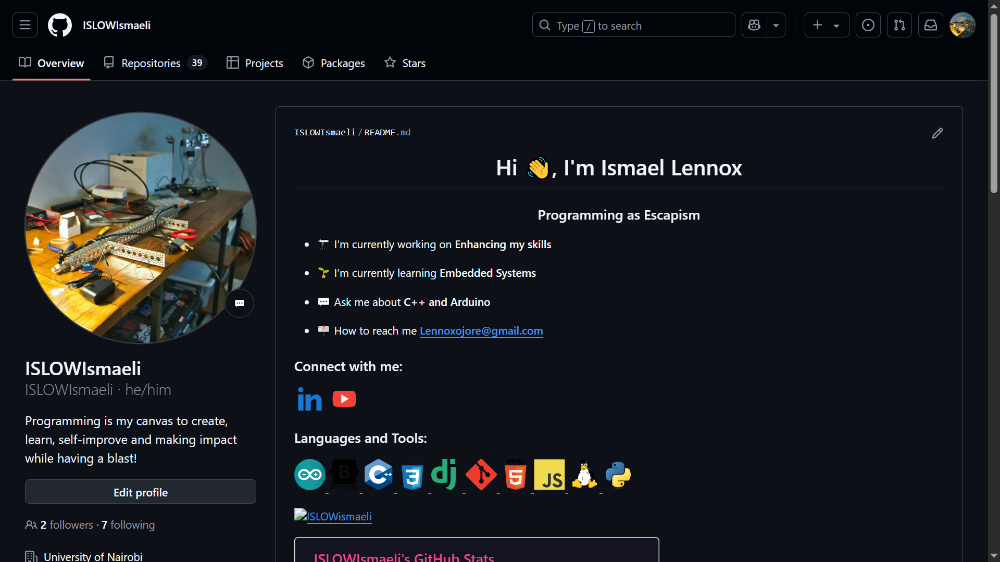

Git & GitHub Overview
This week, I revisited GitHub and Git to reinforce my understanding of version control and repository management. The review covered the fundamentals of Git, GitHub workflows, and practical applications in managing projects. Git is a distributed version control system that allows multiple developers to collaborate on projects efficiently. I reviewed the following key concepts:
- Initializing a Repository: Using
git initto create a new local repository. - Cloning a Repository: Using
git clone <repository_url>to copy an existing repository. - Committing Changes: Using
git add .andgit commit -m "message"to track changes. - Branching and Merging: Managing branches using
git branchandgit merge. - Pushing and Pulling: Syncing changes with a remote repository using
git pushandgit pull.
GitHub provides cloud-based hosting for Git repositories, enabling collaboration and version control. Key areas reviewed include:
Created GitHub Account
I created my GitHub account in 2020 to manage projects and contribute to open-source development. Here is my profile: GitHub Profile.
Repository Creation
Below are videos demonstrating different repository-related tasks:
- Creating a local repository:
- Creating a remote repository.
- Adding file to a local repository
- Connecting local and remote repository
Created HTML & CSS Documents
Using Visual Studio Code, I created an index.html file and added my profile information along with links to various modules. Additionally, I created a module1.html file for documentation and a documentation.css file to enhance appearance.
Markdown files were used to summarize the module, and updates were tracked using Git before pushing them to GitHub.